[case study 01]
GATORE
A booking platform and owner dashboard for board game cafés.
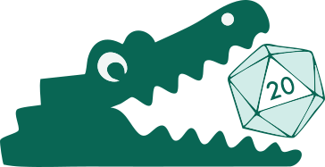
- role
- Lead UX/UI designer and front-end developer
- team
- 4 people: business, design, 2 developers
- timeline
- Jan – Apr 2026, Conestoga capstone
- result
- 2nd place at demo day
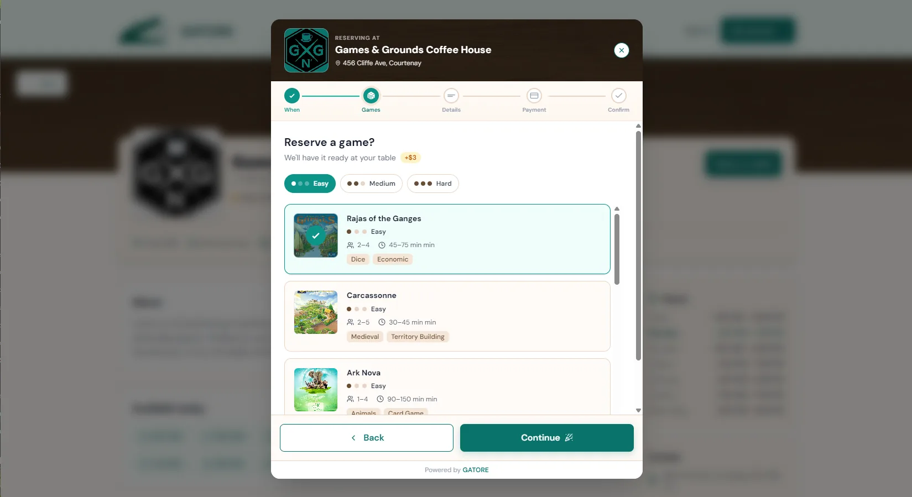
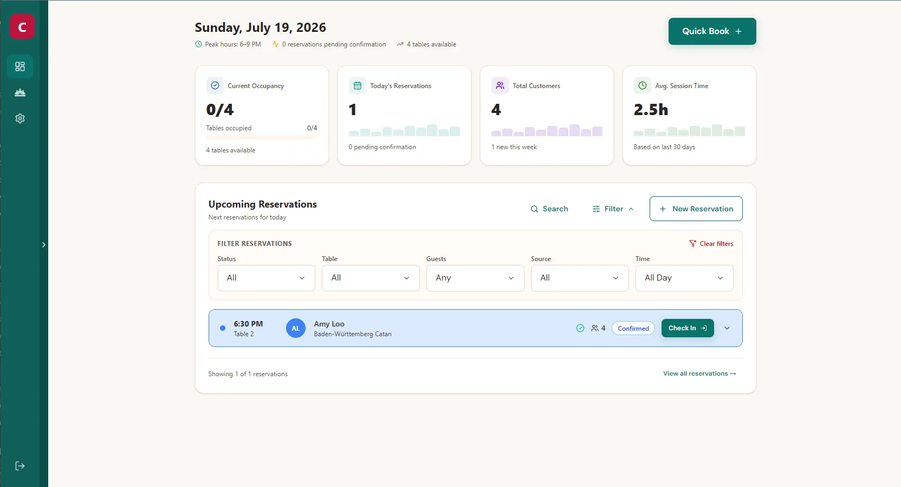
01 · problem + constraints
Players first, with the café behind them
Nothing on the market was made for how board game cafés actually work. Reservation tools ignore game libraries, library tools don't handle bookings, and owners patch together systems that don't connect.
We designed for players first. They want to know a table is free and the game they want is on the shelf, without calling ahead. But players can only request a game if the café keeps its library up to date, so the business side had to be just as easy for staff to use.
A standard restaurant booking tool wasn't a good fit, which set the main constraints:
- Sessions vary in length, unlike fixed meal times.
- Bookings can include a game request, and walk-ins can check out games too.
- Two very different audiences: players browsing on their phones, and staff working fast on a busy floor.
- Accessible to AODA standards from the start.
- No café partner. There wasn't time to find one within the project.
- About three months for everything, from research to a working prototype.
Research
I studied the tools cafés and players already use: restaurant booking systems like OpenTable, gaming café sites, and BoardGameGeek, to see which game details matter most and how they're shown. The gaps were clear. Snakes & Lattes has 3,000+ games with no link to its bookings, groups over eight get sent to a different tool, and staff find games with coloured stickers on the shelves. That shaped the core idea: one flow where you book a table and choose a game together.
How we worked
Our business teammate put together the list of features we needed for the MVP. From that list, I mapped out the flows and walked the team through them to get their opinions. Once we agreed, my job was to turn them into Figma files as fast as possible and hand them off to our two developers. It was a fast and fairly chaotic project, so speed mattered more than polish at that stage.
02 · key decisions
Three choices that shaped it
-
Recommend by group, not by title
- options
- Recommend games from a list of titles, or start from who's playing.
- I chose
- A preferences step that asks about the types of games you enjoy, typical group size and complexity, so recommendations fit the group.
- why
- Groups pick a table and a game together. Starting from the group answers "what can the four of us play tonight?", which a title list can't.
The preferences step was built, but we ran out of time to build the recommendations it would feed.
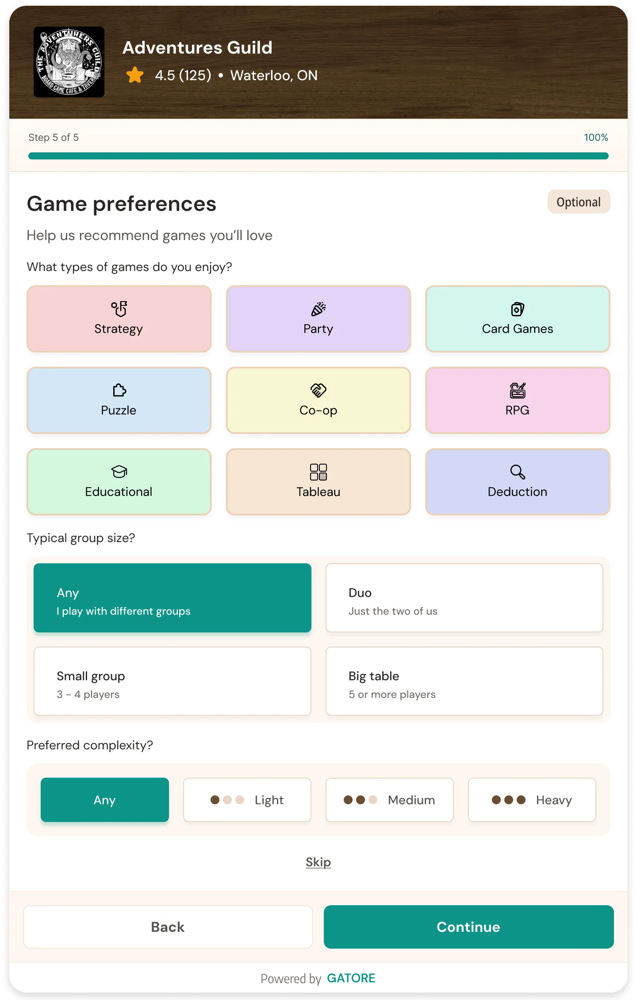
-
No account needed
- options
- Require an account to book, or let guests book with a name and email.
- I chose
- Guest checkout, with accounts offered for booking history and recommendations.
- why
- Competitors rarely force an account to book a table. Making it optional removes a big drop-off point and still gives regulars a reason to sign up.
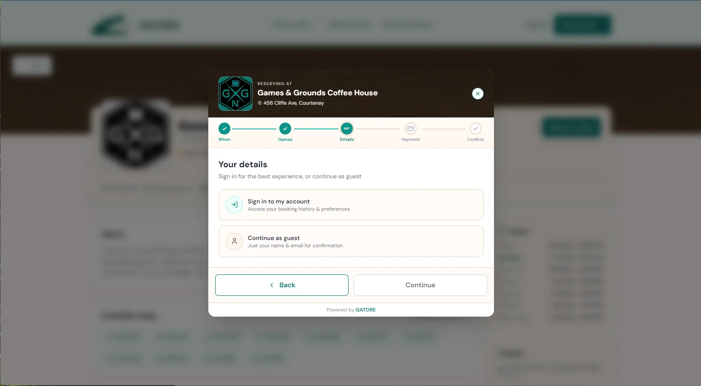
-
Familiar for café staff
- options
- Invent a new way to manage tables and games, or follow the patterns of restaurant table management tools.
- I chose
- A business platform modelled on familiar restaurant tools.
- why
- Staff are busy, and a new tool is only useful if they actually adopt it. If it feels like something they already know, there's less to learn.
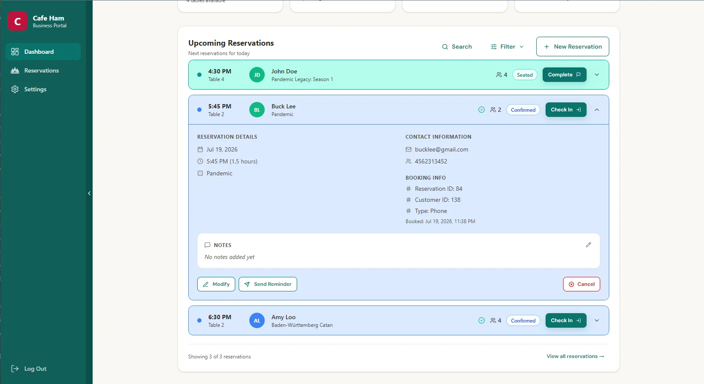
Accounts stayed optional, but I wanted them to be worth having. A player profile saves their usual group size, the kinds of games they like and other preferences, so GATORE could recommend games: new ones to try, and ones they've already played and ranked.
03 · the café side
Built for the people running the room
Players and café owners want different things. Players want to find a game and a table quickly. Owners want to see the whole day at a glance and keep the library accurate. So each side got its own information architecture and interaction patterns, built on the same design system.
The business portal brings reservations, the game library and daily operations into one dashboard. Like the rest of the business side, it follows patterns staff already know from restaurant tools.

04 · design system
Warm for players, fast for staff
This was my second design system. My first, on Karla Learn, wasn't fully developed, and that made the late mobile work much harder. Working under the lead designer at the Centre for Virtual Reality and Innovation also shaped how I approached it.
The name plays on “alligator,” but a literal reptile green felt cold, so I went with teal. Warm beige and brown bring in the cozy feel of a café.
Accessibility was built into the system from the start: colour contrast, readable text sizes and screen reader support. The main teal works for buttons and icons, and where small text needed more contrast, I used a darker teal.
Both sides share one set of tokens: teal, warm beige and warm brown, DM Sans, an 8px corner radius and a 4px grid. Customer screens use them warmly, with room for discovery. Business screens use the same tokens more densely, so staff can scan and act quickly.
The system came together near the end. I meant to start it earlier this time, but with about three months for the whole project, there wasn't much room to experiment, so I built it from the patterns already in my screens. Once it was finished, I implemented it myself as React and Tailwind components, so the build used the same parts I designed with.
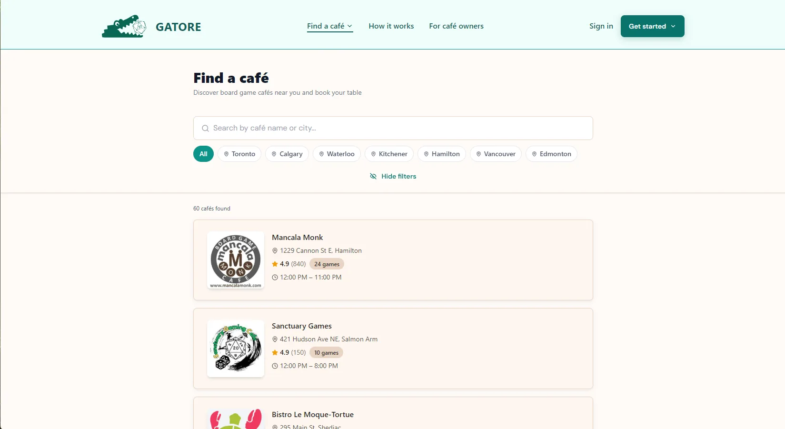
05 · what I changed
Making preferences easy to answer
The game preferences step was meant to feed GATORE's recommendations, so it had to be quick to fill in and easy to skip. The first version worked, but it asked players to think in bare numbers and labels.
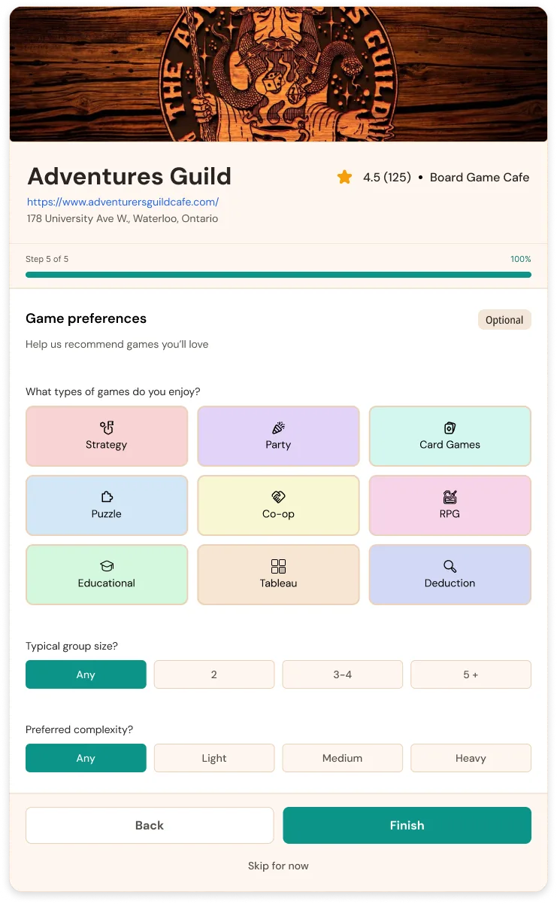
Note: every game type is selected in both screenshots, which is why all the tiles show their colour.
- Group sizes describe people, not numbers. Duo, Small group and Big table, each with a short line underneath, plus Any for people who play with different groups.
- Complexity reads at a glance. One, two or three filled dots show Light, Medium and Heavy. The same dots appear on every game card in the library, so players learn one symbol and can judge a game's difficulty anywhere they see it. Because it's the number of filled dots, it doesn't rely on colour alone.
- It matches the rest of the product. The big banner became the same compact header as the booking flow, so every step feels like one system.
06 · results + next
What happened, and what I'd do next
- Placed 2nd at Conestoga's capstone demo day. The judges said it felt complete and well thought through, and were impressed by how much we built.
- They were most excited about the idea behind it: bringing people together to meet and play games.
- Delivered a high-fidelity React prototype covering booking, the game library, and the owner dashboard.
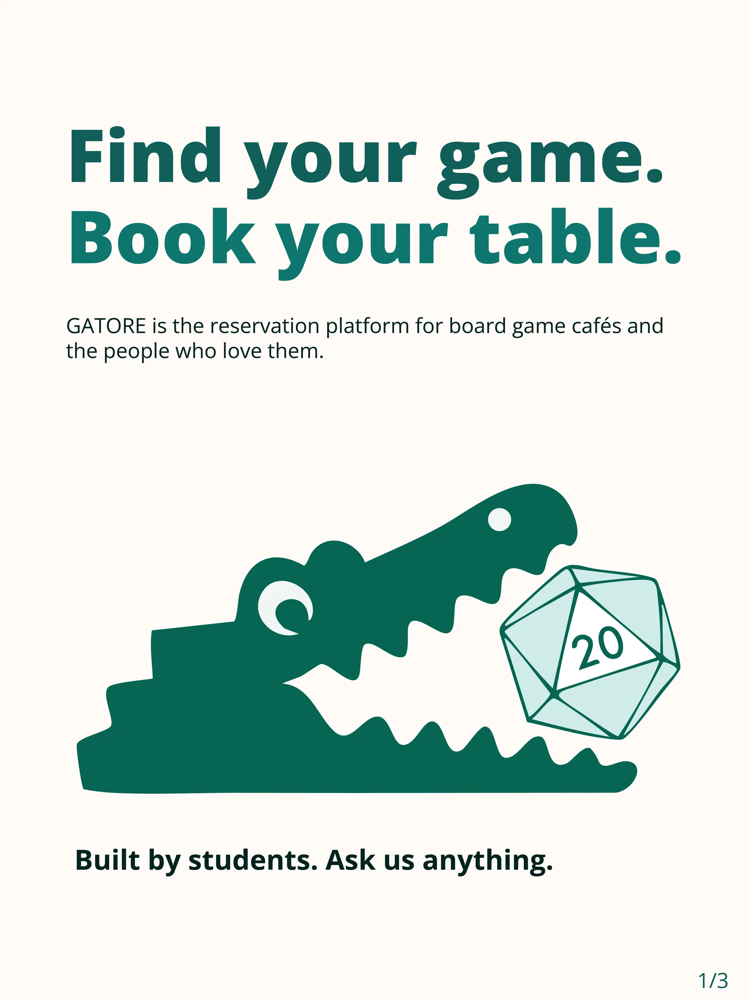
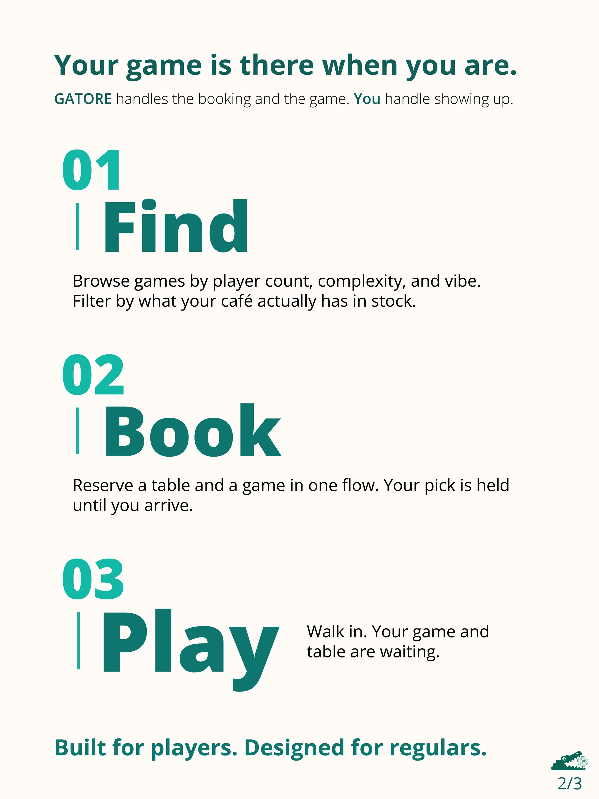
Our demo day posters
We didn't have time for usability testing. If the project had kept going, I'd have tested the booking flow with real players and café staff, then built the recommendation system. It was one of my favourite ideas. After that, the social side: connecting players with similar tastes so they can meet and play together, which is the part the judges were most excited about.
-
Build the system out first
With three months for everything, the system came together near the end. GATORE is what convinced me to build it out early.
-
Practical for staff, still GATORE
Making the business side feel like GATORE while keeping it practical for staff was a challenge. It needed to be faster and denser than the customer side, so I used the same tokens, just more tightly.
-
Test before you launch
Next time I'd make room for usability testing before launch.
07 · final designs
The finished screens
For players
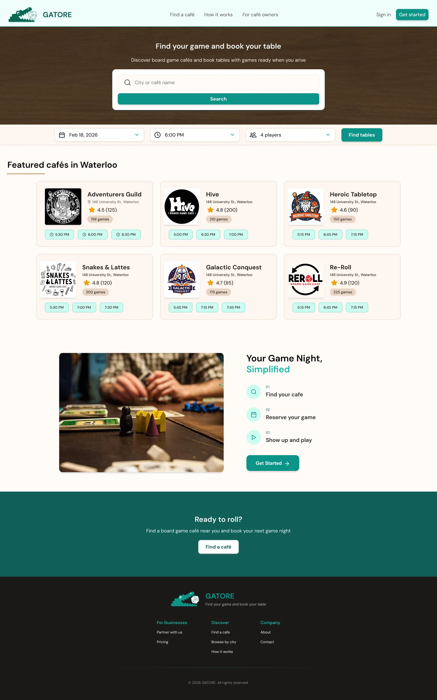
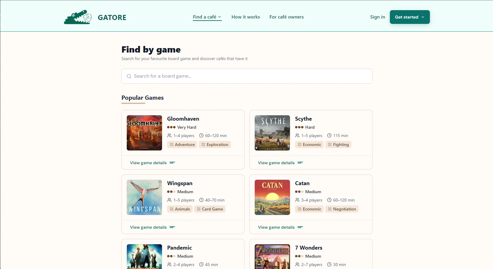
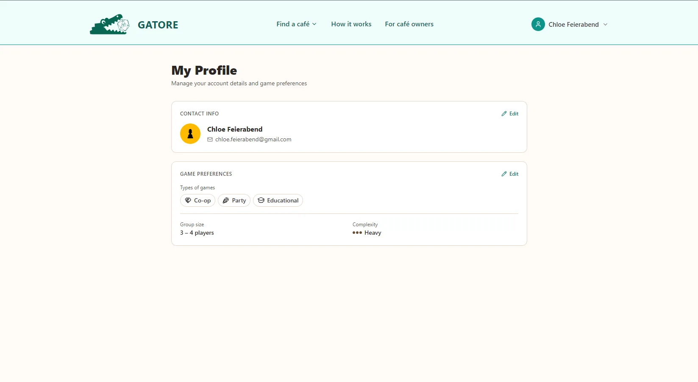
For café owners
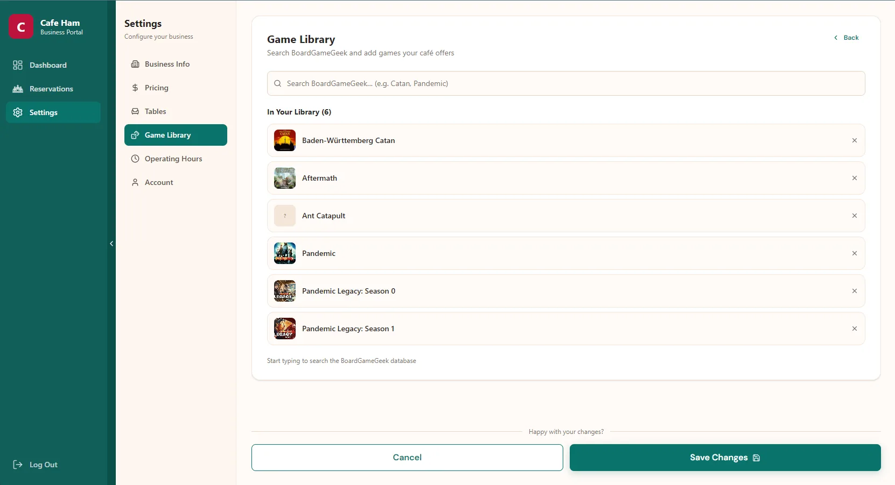
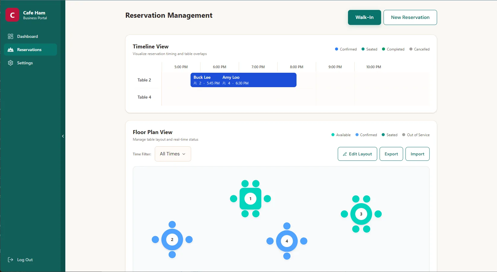